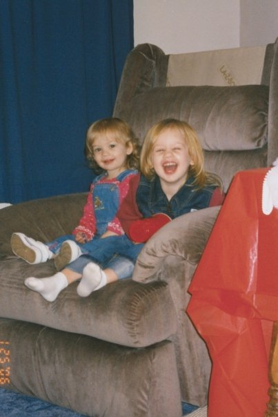
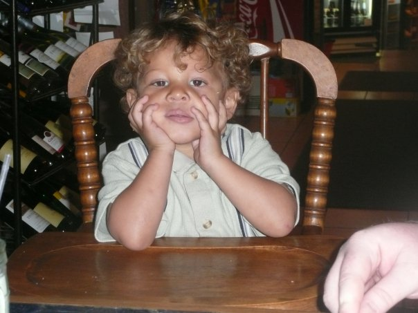
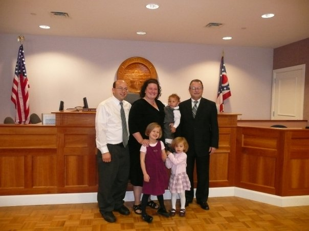
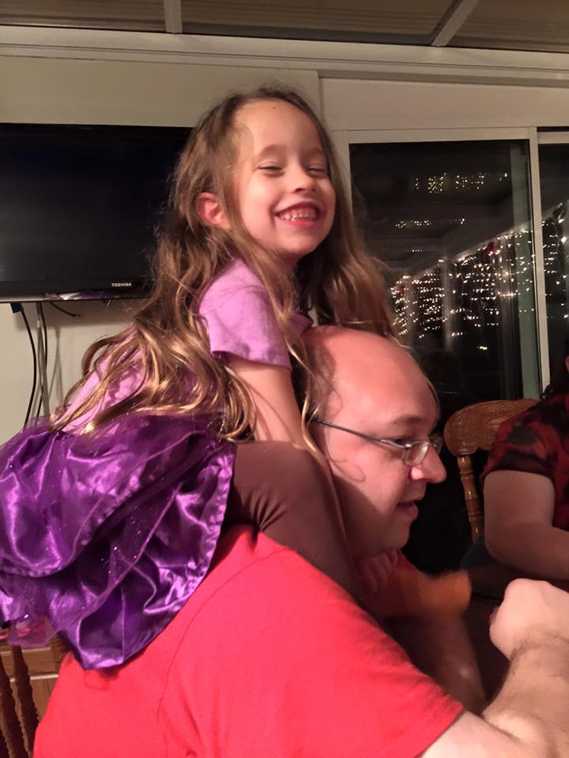

Families are Forever
This is the story of our family
The beginning of our story took place 10 years ago in Columbus, OH. Actually, it started almost a year before.
These two young ladies came to our family together as we embarked down the road of foster care. We had the priviledge of providing a home to them while they were seeking refuge from the storms of their lives. Shortly after their placement, their birthmother made an announcement.
She announced that she was due to have another baby. Nine months later he joined our home straight from the hospital. We went from having no children to three in a matter of ten months. We continued to foster these children for almost a year. During the summer of 2007, we found out that we would have the opportunity to adopt these wonderful children.
The final member of our family had to have a little help from the doctor. But three years later, with some extra special help, we had our only child by birth.
